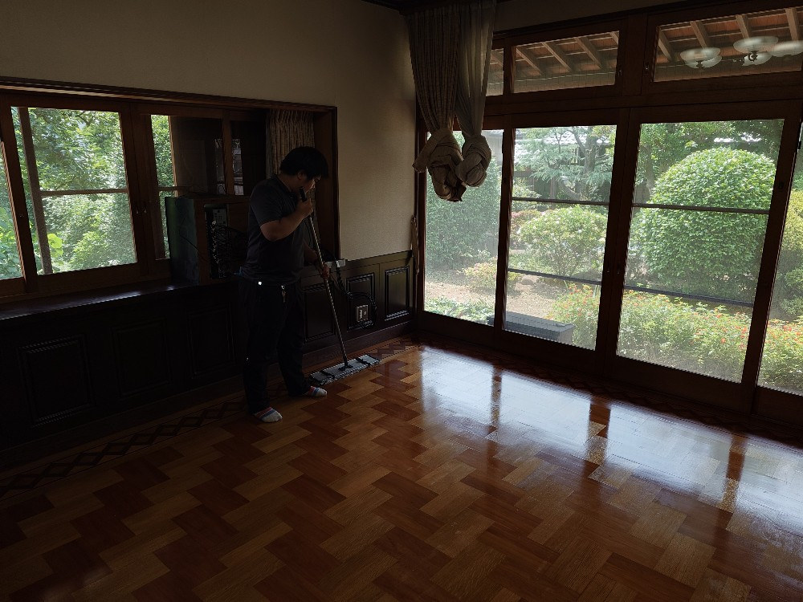
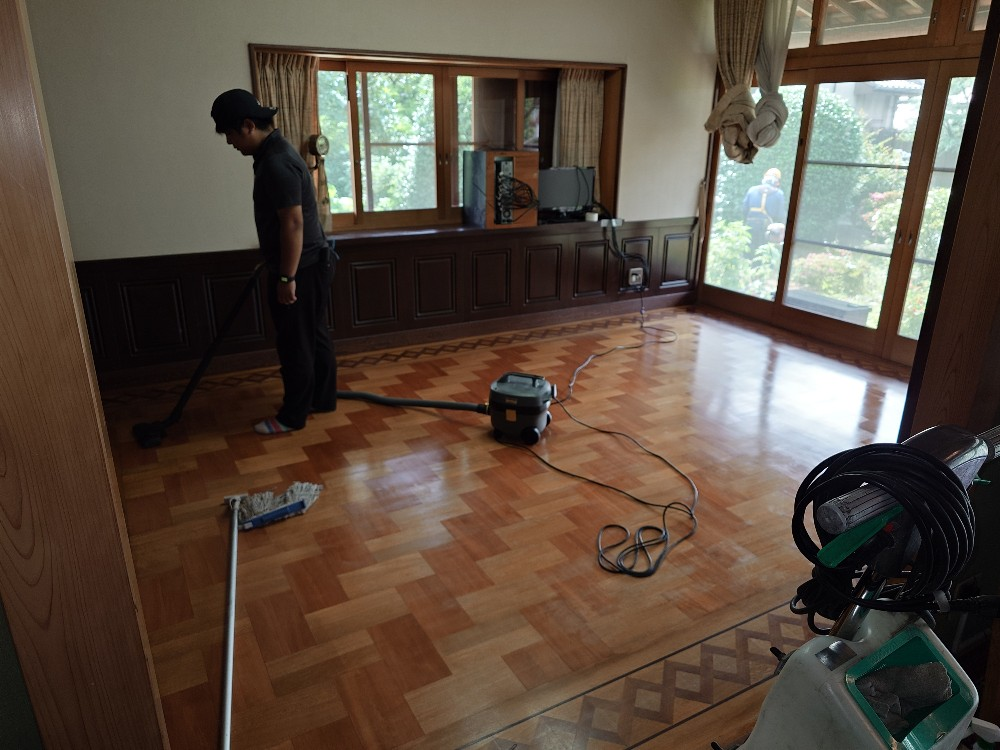
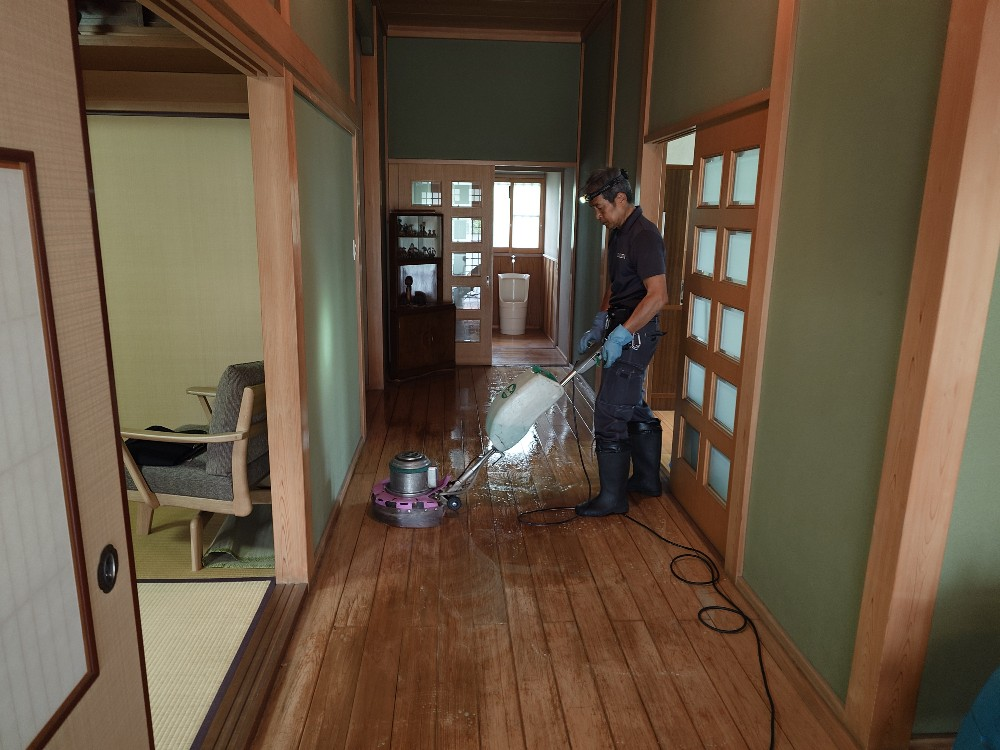
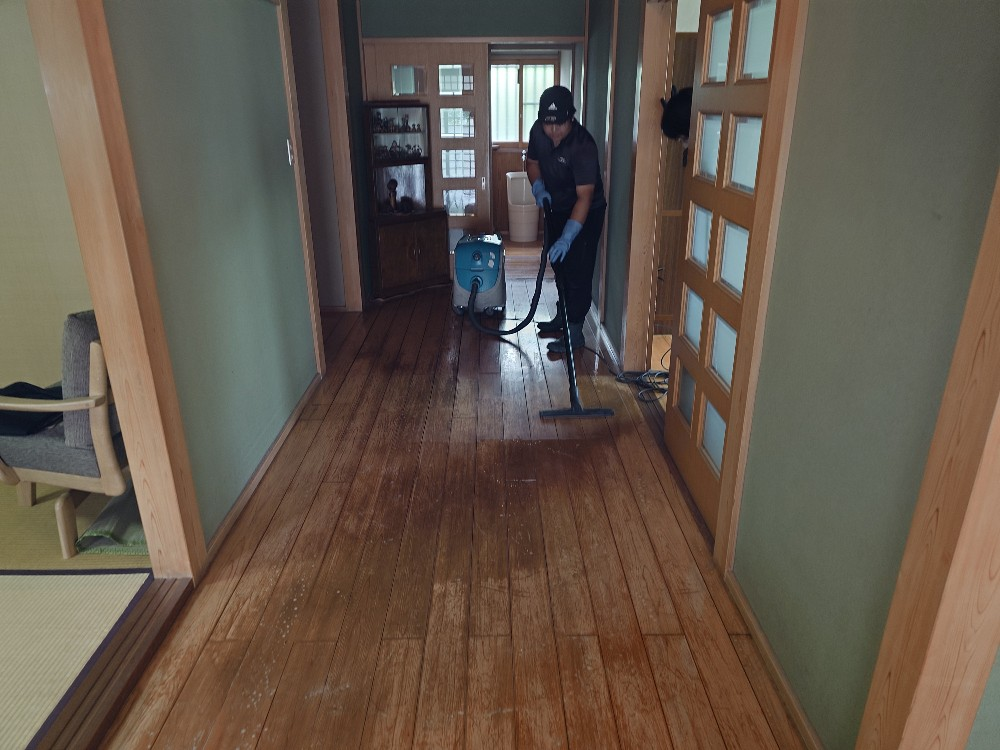
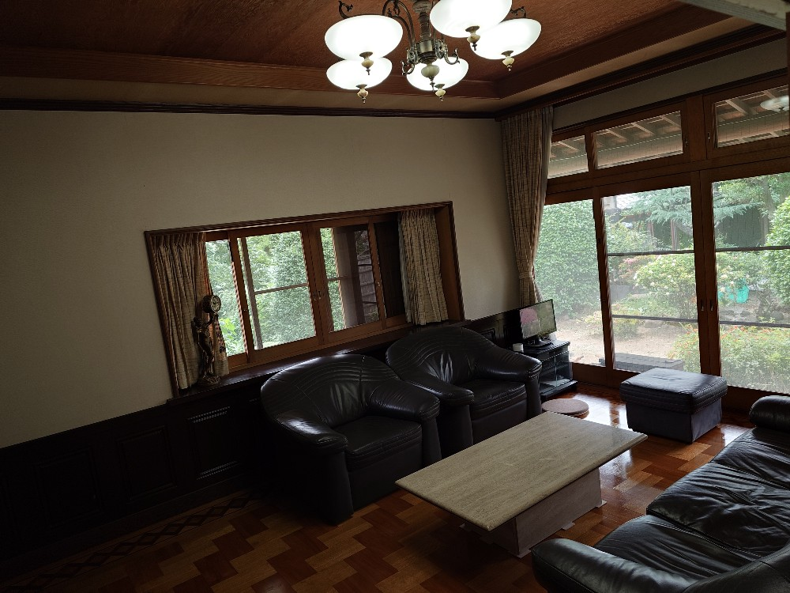

板橋区H様のお屋敷の床面剥離洗浄クリーニングワックス仕上げをしました!

板橋区のH様お屋敷の応接間の床面剥離洗浄クリーニングワックス仕上げをしました!H様のお屋敷は400年前から伝わる、素晴らしい伝統文化財のお屋敷です、歴史を感じる堂々とした応接間の床面を、今回法事がある事から、床面剥離洗浄クリーニングワックス仕上げして、お客様を迎える事になりました!DAIZENプロフェッショナルメソッドを駆使して、気品と伝統溢れる重厚な応接間を隅々まで念入りにクリーニングしました!とても美しい応接間が甦りました!よかったです!



